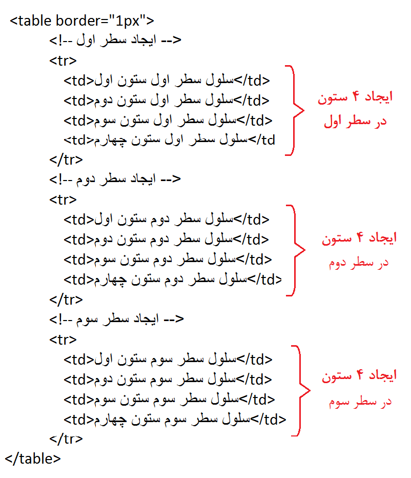
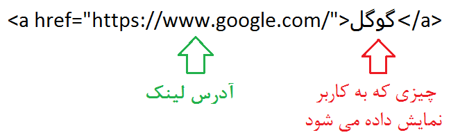

جلسه چهارم به تاریخ سی ام بهمن ماه
جداول در html توسط تگ table ایجاد می شوند.
استفاده از این تگ به تنهایی ، تغییری در ضفحه ایجاد نخواهد کرد و باید از تگ های tr برای ایجاد سطرها در آن استفاده شود.
درون تگ های tr ، با استفاده از تگ های td ستون ها ایجاد خواهند شد و محتوی جدل ، سلول به سلول در تگ های td نوشته می شود
مثال : دستورات زیر جدولی دارای 3 سطر ایجاد خواهد کرد که درون هر سطر 4 ستون وجود دارد
خروجی دستورات بالا به شکل زیر است
| سلول سطر اول ستون اول | سلول سطر اول ستون دوم | سلول سطر اول ستون سوم | سلول سطر اول ستون چهارم |
| سلول سطر دوم ستون اول | سلول سطر دوم ستون دوم | سلول سطر دوم ستون سوم | سلول سطر دوم ستون چهارم |
| سلول سطر سوم ستون اول | سلول سطر سوم ستون دوم | سلول سطر سوم ستون سوم | سلول سطر سوم ستون چهارم |
نکته : مشخصه ی border برای ایجاد کادر دور سلول ها به اندازه یک پیکسل استفاده شده است. استفاده از این مشخصه منسوخ شده و تنها برای نمایش جدول از آن استفاده کردم.
نکته :ممکن است تعداد ستون هادر هر سطر متفاوت از دیگر سطر ها باشد
مثال :در جدول زیر سطر اول 3 ستون، سطر دوم 2 ستون و سطر سوم یک ستون دارد
| مرتضی | مهدی | محمد |
| فاطمه | کیارش | |
| سحر |
نکته :با استفاده از مشخصه colspan می توانید عرض یک سلول از یک سطر را به بیش از یک ستون گسترش دهید به عنوان مثال در جدول زیر سلول مربوط به کیارش به دو ستون و سلول مربوط به سحر به سه ستون گسترش یافته است
| مرتضی | مهدی | محمد |
| فاطمه | کیارش | |
| سحر | ||
نکته :با استفاده از مشخصه rowspan می توانید ارتفاع یک سلول از یک ستون را به بیش از یک سطر گسترش دهید به عنوان مثال در جدول زیر سلول مربوط به کیارش به دو سطر و سلول مربوط به محمد به سه سطر گسترش یافته است
| مرتضی | مهدی | محمد |
| فاطمه | کیارش | |
| سحر |
نکته :محتوی سلول های جدول می تواند هر چیزی باشد. مثلا p ، h1 یا حتی یک table
تگ a که برگرفته از کلمه anchor است برای ایجاد لینک در صفحات html مورد استفاده قرار میگیرد
مشخصه href لینک صفحه ای است که پس از کلیک روی لینک به آن منتقل خواهیم شد و محتوی تک a چیزی است که روی صفحه نشان داده می شود
مثال :تعریف یک لینک با متن "گوگل" برای انتقال به سایت گوگل
خروجی زیر را تولید می کند. روی کلمه گوگل کلیک کنید تا به سایت گوگل منتقل شوید
گوگلنکته :محتوی تک a می تواند چیزی غیر از متن نیز باشد به عنوان مثال در زیر، تصویر پاندا برای انتقال به سایت گوگل تعریف شده است(روی پاندا کلیک کنید)